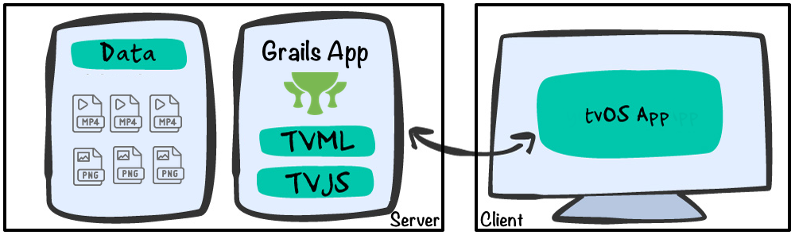

2 Getting Started
Version: 3
2 Getting Started
In this guide, you will write a TVML application.
TVML apps provide you with a way to create apps for Apple TV using TVMLKit JavaScript (TVMLKit JS), the Apple TV Markup Language (TVML), and the TVMLKit framework. Every template has a specific design that follows Apple style guidelines, allowing you to quickly create gorgeous looking apps.
The TVML App, built during this guide, displays an Apple TVML Stack Template of Grails Quickcasts. Grails Quickcasts are short videos of pure Grails coding. When the user selects one, an Apple TVML Product Template shows the Quickcast detail. The user can reproduce the video by selecting the play button.
2.1 Architecture
This guide features a client-server architecture. The client is a tvOS application. The server is a Grails application. The client connects to the server, which responds with TVMLKit JS and TVML documents.
We have separated the Grails application from the data ( mp4 files and Png files ); videos and thumbnails. We use MAMP to run a local apache server at port 8888 pointing to the folder data. During this guide you will see references to mp4 files such as:
link:../snippets/grails-app/init/com/ociweb/quickcasts/BootStrap.groovy[role=include]In a Production environment, you may want to host those files in a service such as Amazon Simple Store Service - AWS S3
2.2 What you will need
{commondir}/common-requirements.adoc * Latest stable version of XCode. We wrote this guide with Xcode 8.2.1.
2.3 How to complete the guide
To complete the Grails application developed in this guide, you will need to checkout the source from Github and work through the steps presented by the guide.
To get started do the following:
-
Download and unzip the source or if you already have Git:
git clone https://github.com/grails-guides/grails-tvmlapp.git -
cdintograils-guides/grails-tvmlapp/initial -
Head on over to the next section
You can go right to the completed example if you cd into grails-guides/grails-tvmlapp/complete
|